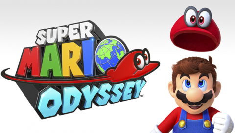
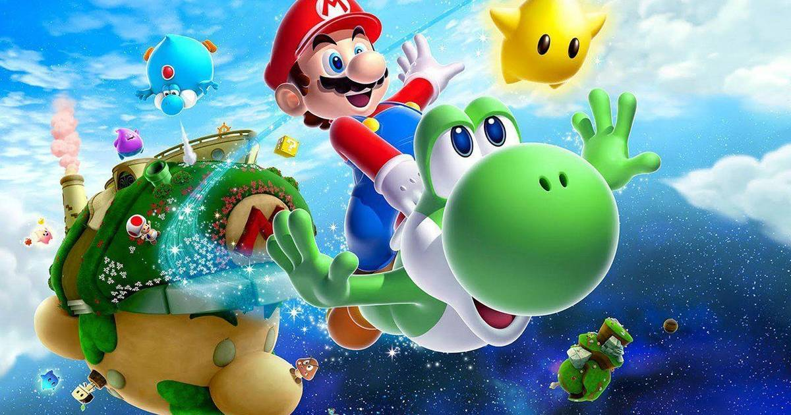
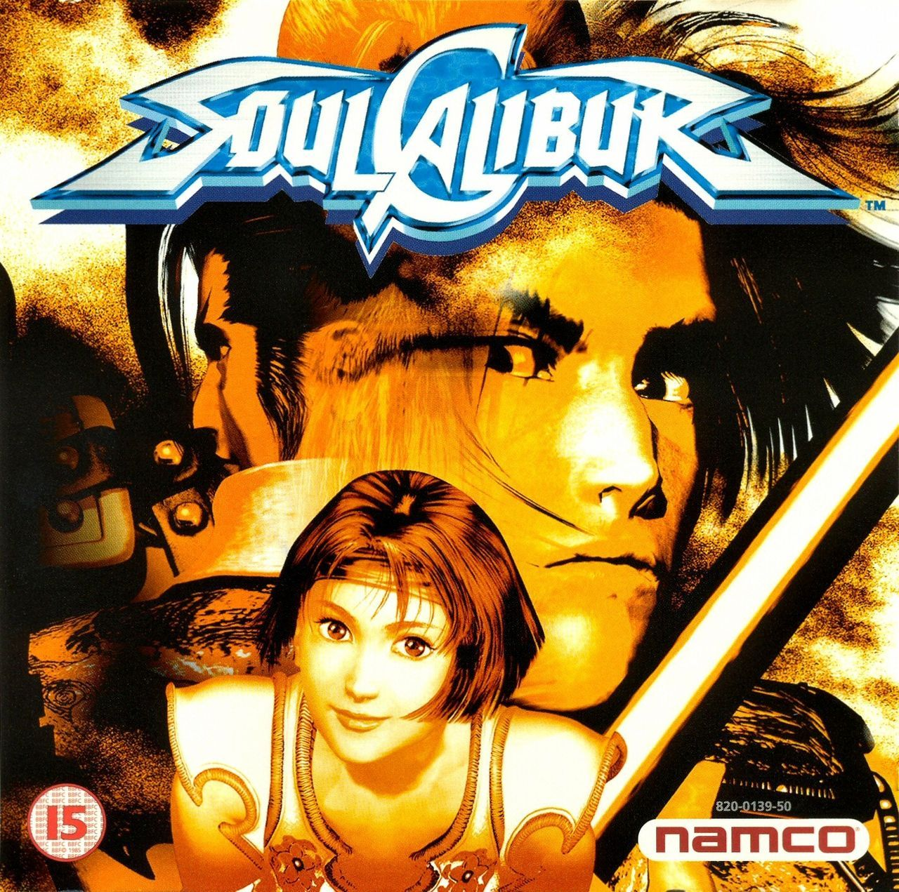
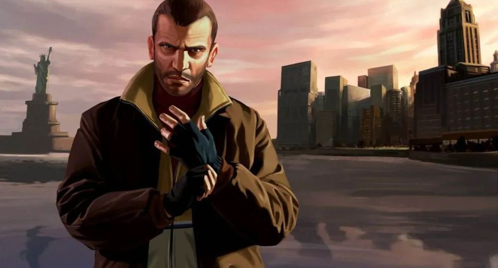
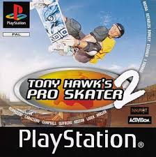

10.- Tony Hawk’s Pro Skater 3 (2001, Play Station, PS2, Xbox, Microsoft Windows)
Descripción
Tony Hawk's Pro Skater 3 (comúnmente abreviado como THPS3) es un videojuego de skateboarding que corresponde a la tercera entrega en la serie de Tony Hawk's.
Fue desarrollado por Neversoft y publicado por Activision en 2001 para Nintendo GameCube, Game Boy Color, PlayStation 2, y PlayStation.
En 2002, fue publicado para Nintendo 64, Xbox, Microsoft Windows y Game Boy Advance. Fue el primer juego lanzado para PlayStation 2 que soportó juego en línea,
y el último juego lanzado para Nintendo 64 en los Estados Unidos.
9.- The Legend of Zelda: Breath of the Wild (2017, Nintendo)
Descripción
The Legend of Zelda: Breath of the Wild es el título oficial del videojuego de acción-aventura de la serie The Legend of Zelda,
desarrollado por Nintendo EPD (división de Nintendo creada por la unión de Nintendo EAD, Nintendo Software Planning & Development),
en colaboración con Monolith Soft para Wii U y Nintendo Switch.1 Es la décimo octava entrega de la serie y la tercera en utilizar gráficos en alta definición
(la primera fue The Legend of Zelda: The Wind Waker HD y la segunda es The Legend of Zelda: Twilight Princess HD).
Se lanzó el 3 de marzo de 2017 para Wii U (siendo el último juego en salir para dicha consola) y Nintendo Switch.
8.- Super Mario Odyssey (2017, Nintendo Switch)

Descripción
Super Mario Odyssey es un videojuego de plataformas de mundo abierto para Nintendo Switch que se lanzó en Japón y Estados Unidos
el 27 de octubre de 2017. Es el decimonoveno título de la serie Super Mario y el séptimo juego de plataformas en 3D de Mario.
También es el tercer juego de Super Mario en esta consola, ya que el primero fue Mario Kart 8 Deluxe, y el segundo Mario + Rabbids Kingdom Battle.
A solo unas cuantas horas previas a su lanzamiento oficial, ya había sido considerado por los críticos especializados como una obra maestra y como uno de los mejores videojuegos de todos los tiempos.
7.- Grand Theft Auto V (2013. PlayStation 3 y Xbox 360)
Descripción
Grand Theft Auto V es un videojuego de acción-aventura de mundo abierto desarrollado por el estudio Rockstar North
y distribuido por Rockstar Games. Fue lanzado el 17 de septiembre de 2013 para las consolas PlayStation 3 y Xbox 360.
Posteriormente, fue lanzado el 18 de noviembre de 2014 para las consolas de nueva generación PlayStation 4 y Xbox One con mejores gráficos y novedades
interesantes como la vista en primera persona y finalmente para Microsoft Windows el 14 de abril de 2015. Se trató del primer gran título en la serie Grand Theft Auto
desde el lanzamiento de Grand Theft Auto IV en 2008.
6.- Super Mario Galaxy 2 (2010, Wii, Wii U)

Descripción
Super Mario Galaxy 2 es un videojuego de plataformas desarrollado por Nintendo EAD Tokio y publicado por Nintendo para su consola Wii.
Fue anunciado en el E3 2009 y es la secuela directa de Super Mario Galaxy. Fue lanzado en Estados Unidos el 23 de mayo de 2010,
en Japón el 27 de mayo de 2010, en Europa el 11 de junio de 2010, y en Australia el 1 de julio de 2010.
Es el cuarto juego de plataformas en 3D de la Super Mario, después de Super Mario 64, Super Mario Sunshine y Super Mario Galaxy.
5.- Super Mario Galaxy (2007. Wii)
Descripción
Super Mario Galaxy, también conocido como Mario Galaxy y SMG, es un videojuego de plataformas en 3D desarrollado por Nintendo EAD Tokio,
dirigido por Yoshiaki Koizumi, y publicado por Nintendo para su consola Wii. El juego fue lanzado durante el mes de noviembre del año 2007 en Japón,
América y Europa. Tras su estreno, se convirtió en el primer título de la serie Mario en salir para la mencionada Wii.
4.- SoulCalibur (1999, Dreamcast, Xbox 360)

Descripción
Soulcalibur es la segunda parte de la saga de videojuegos de lucha con armas blancas Soul, desarrollada por la compañía Namco.
Consta de 6 capítulos (cinco con el nombre Soulcalibur) en su arco argumental principal, desde su nacimiento con Soul Edge en 1995,
hasta el más reciente Soulcalibur VI, lanzado en 2018. En 1998 se lanzó el juego Soulcalibur para la placa arcade de Namco System12,
denominación que quedaría desde entonces como título para la saga.
3.- Grand Theft Auto IV (2008, PS3, Xbox 360, Microsoft Windows))

Descripción
Grand Theft Auto IV es un videojuego de acción-aventura de mundo abierto desarrollado por Rockstar North.
El videojuego es el noveno título de la serie Grand Theft Auto y el primero de la misma
en aparecer en las videoconsolas de séptima generación. Fue lanzado para PlayStation 3 y Xbox 360 en Australia, Europa y Norteamérica
el 29 de abril de 2008 y en Japón el 30 de octubre de 2008. Se desarrollaron dos episodios descargables para Xbox 360, PC y PlayStation 3; el primero fue The Lost and Damned,
lanzado el 17 de febrero de 2009, y el segundo fue The Ballad of Gay Tony, que salió al mercado el 29 de octubre de 2009.
2. Tony Hawk’s Pro Skater 2 (PlayStation, Xbox, Nintendo 64, Game Boy Advance)

Descripción
Tony Hawk's Pro Skater 2 (comúnmente abreviado como THPS2) es el segundo videojuego de la saga Tony Hawk's y fue desarrollado por Neversoft y
distribuido por Activision para PlayStation, Nintendo 64, Windows, Windows Mobile, Mac OS, iOS (iPhone, iPod Touch e iPad), Dreamcast,
Game Boy Color, Game Boy Advance (lanzado en Japón como SK8: Tony Hawk no Pro Skater 2) y Xbox (lanzado como Tony Hawk's Pro Skater 2X).
1.- The Legend of Zelda: Ocarina of Time (1998, Wii, Nintendo 64, Nintendo GameCube, Nintendo iQue)
Descripción
The Legend of Zelda: Ocarina of Time es un videojuego de acción-aventura de 1998 desarrollado por la filial Nintendo EAD y publicado por Nintendo para
la consola Nintendo 64. Fue lanzado en Japón el 21 de noviembre de 1998, mientras que a Norteamérica llegó dos días después, el 23 de noviembre,
y en Europa se estrenó el 11 de diciembre de ese mismo año. Para el caso de Sudamérica, fue presentado en Chile el 21 de noviembre de 1998 en un evento
especial para periodistas. A pesar de que en un inicio los diseñadores planeaban lanzar el juego para el periférico Nintendo 64, al final se optó por
diseñarlo para un cartucho de 256 megabits (igual a 32 megabytes), que eran los de mayor capacidad producidos por Nintendo en ese entonces. Ocarina of Time
es el quinto lanzamiento de la franquicia The Legend of Zelda, y se convirtió en el primero de la serie en hacer uso de gráficos 3D.